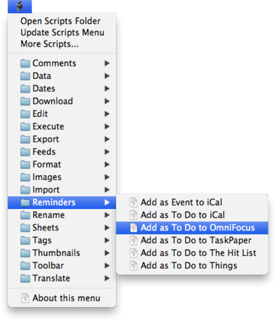

|
|
The Scripts menu |
|
The Scripts menu is located left of the Help menu and shows a stylized AppleScript "S" symbol instead of a normal menu title. It contains a collection of useful, predefined AppleScripts you can use directly from within DEVONthink Pro Office.  Some of the scripts work without having selected a document, while others require you to select the document you want the script to interact with. In general, the script will tell you what you have to do when you select it from the Scripts menu. Use More Scripts to install additional scripts. Read more about scripts and the DEVONthink Pro Office Scripts menu here. |